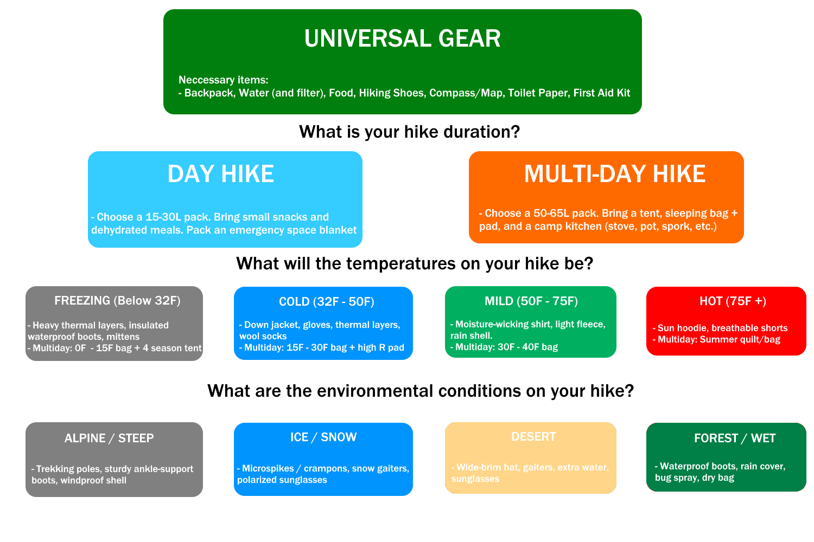

Backpack
Purpose & when to bring it: Backpack
Purpose: Carries and organizes your equipment.
When it applies: Choose capacity around your equipment and trip length. Try the fit with your full trip load before departure.
Your first backpacking trip
Take your hiking experience a step further. Build a trip plan, understand your equipment, and prepare for your first nights on the trail.
Start planning Explore the gear list01 / Plan your trip
Your route, trip length, and expected conditions shape the equipment and supplies you bring.
For your first trip, choose somewhere close to home and well traveled. Look up local hiking guides for your state and campsite reviews for ideas. Research trails through the park or land manager’s website, checking access, permits, camping restrictions, current alerts and events that could affect your trip.
Compare distance, terrain and elevation changes with your group’s abilities. As a starting point, consider around 3–10 miles per day and a couple hundred feet of elevation gain, adjusting the route to what your group can manage. Keep the day count short instead of starting with a longer multi-day trip. Carrying overnight equipment is slower and more demanding than day hiking, so allow time for breaks and setting up camp.
Research typical seasonal conditions when planning ahead, then check expected weather, daylight, trail conditions and water availability. Plan clothing, shelter and sleep gear around the expected conditions, including nighttime temperatures. Recheck current information before departure.
Choose a route with plentiful access to water and suitable places for shelter. Identify established campsites and potential refill points along the route. Check current water-source reliability, how much you can carry, your treatment method and what you will do if an expected source is unavailable.
Decide who is coming and how you will divide shared supplies and camp setup. Research local wildlife and potential obstacles, including any required food storage equipment. Prepare offline maps before leaving cell service.
Record each day’s route, distance, elevation changes and overnight stop. Give trusted contacts your itinerary, expected return time and what to do if you are overdue. Carry route information and required permit copies.
02 / Choose your gear
Work through each category for a first trip on established trails. Expand an item for its purpose, when it applies, and a source.
Core: cover this need on every trip. Some equipment can be shared within your group.
Condition-dependent: include when the route, weather, rules or your chosen setup requires it.
Optional comfort: a personal extra after your essential needs are covered.
Check your land manager’s current requirements before choosing equipment. Labels help you plan; a filtered view is not a complete packing list.
Showing all 50 items
No items match these filters. Choose another category or show all gear.
Purpose: Carries and organizes your equipment.
When it applies: Choose capacity around your equipment and trip length. Try the fit with your full trip load before departure.
Purpose: Provide overnight shelter.
When it applies: Use a complete setup suited to your destination. Practice pitching it.
Purpose: Provides insulation overnight.
When it applies: Match it to expected nighttime temperatures.
Purpose: Insulates and cushions you from the ground.
When it applies: Pair it with your sleeping bag.
Purpose: Keeps your sleep gear dry.
When it applies: Use a pack cover and waterproof storage for your sleeping bag.
Purpose: Provide additional support while hiking.
When it applies: Consider them for your route and preferred walking setup.
Purpose: Fuel your hiking days.
When it applies: Plan each meal and choose food that stores well, such as dehydrated meals, jerky and granola bars. Check that your portions fit your trip.
Purpose: Covers an unexpected delay.
When it applies: Carry an extra day of food that needs no cooking.
Purpose: Keeps food and scented items secured.
When it applies: Follow land-manager rules; carry an approved bear canister where required.
Purpose: Carry your drinking supply.
When it applies: Plan capacity around conditions and reliable refill points, including a source failure.
Purpose: Makes collected water safer to use.
When it applies: CDC recommends boiling, or filtering then disinfecting. Follow product directions; clear water can contain germs.
Purpose: Disinfect water as part of your treatment plan.
When it applies: Store tablets as directed. Check which germs the product treats and its required contact time. Tablets and filters are not interchangeable.
Purpose: Heat meals and water.
When it applies: Bring for cooked meals or boiling water; check current stove and fire restrictions. Carry two ignition methods in case one fails.
Purpose: Prepare and eat your meals.
When it applies: Choose pieces to match your menu; avoid duplicate cookware.
Purpose: Supplement salts lost through sweat.
When it applies: Consider for long, sweaty hiking days; bring drinking water too.
Purpose: Collects food scraps from dishwater.
When it applies: Use when preparing meals that leave food particles; pack out the collected scraps.
Purpose: Support your feet on the trail.
When it applies: Wear comfortable footwear tested before departure.
Purpose: Keep you comfortable while moving.
When it applies: Choose wool or synthetic base layers, breathable underwear and durable hiking pants. Avoid cotton that holds moisture. Check that any bra band or clasps stay comfortable under your pack; bring spare padded socks.
Purpose: Protect you during changing weather.
When it applies: Pack for the harshest plausible conditions, including cold evenings and rain.
Purpose: Protects skin and eyes.
When it applies: Combine sunglasses, sunscreen, a sun hat or bandanna and protective clothing.
Purpose: Add warmth when temperatures fall.
When it applies: Include when forecast lows, elevation or exposure call for them.
Purpose: Provide comfortable clothing for camp and sleep.
When it applies: Consider long underwear and dry socks; match layers to nighttime conditions.
Purpose: Help you locate yourself and follow your route.
When it applies: Carry a physical map and know how to use your navigation tools.
Purpose: Supports electronic navigation.
When it applies: Download your route before leaving service; keep a physical backup. Use airplane mode or power off when appropriate to conserve the phone’s battery.
Purpose: Document authorized access and your plan.
When it applies: Carry required permits; leave your itinerary and return time with a trusted contact.
Purpose: Provides a remote emergency signaling option.
When it applies: Consider for routes beyond cell service. A satellite communicator supports two-way messaging; a personal locator beacon sends an SOS signal. Learn the device before departure.
Purpose: Keep personal identification and payment available.
When it applies: Store them together in a dedicated compartment.
Purpose: Support daily hygiene.
When it applies: Pack toiletries and menstrual supplies you use, plus bags for used products.
Purpose: Allow responsible bathroom stops.
When it applies: Check local disposal rules; carry sealable bags to pack out toilet paper and hygiene waste.
Purpose: Handles waste where toilets are unavailable.
When it applies: Check whether catholes are permitted or a pack-out system is required.
Purpose: Keep litter and food scraps contained.
When it applies: Pack out all trash and leftovers; check camp before leaving.
Purpose: Remove dirt and food residue with a dish scrubber, water and a small amount of soap as needed.
When it applies: Wash at least 200 feet from water, using little soap. Biodegradable soap still affects waterways.
Purpose: Reduces exposure to biting insects.
When it applies: Pack repellent or a head net for expected bugs and ticks.
Purpose: Offer a convenient way to clean up.
When it applies: Bring if useful for your hygiene routine; pack out used wipes.
Purpose: Provide hands-free light.
When it applies: Check it works and carry spare batteries or compatible backup power.
Purpose: Support immediate care and personal medical needs.
When it applies: Tailor supplies to your group; know their use and check expiry dates.
Purpose: Provides protection if plans change.
When it applies: Keep shelter accessible during an emergency, including when separated from camp.
Purpose: Offer an emergency heat or signaling option.
When it applies: Protect matches or a lighter from water; obey local fire rules.
Purpose: Address equipment damage.
When it applies: Match tape, patches and tools to the equipment you carry.
Purpose: Keep essential electronics powered.
When it applies: Bring when your devices need recharging during the trip.
Purpose: Provides a way to signal for help.
When it applies: Keep it accessible in case you become lost or need assistance.
Purpose: Provides a bear-deterrent option.
When it applies: Check local recommendations and whether it is allowed; learn its proper use before the trip.
Purpose: Provides another charging option for electronics.
When it applies: Consider if your phone, headlamp or GPS setup needs it; check compatibility before leaving.
Purpose: Makes sleeping more comfortable.
When it applies: Optional if your sleep setup already works without one.
Purpose: Offers a place to rest at camp.
When it applies: Weigh the comfort against its packed weight and space.
Purpose: Provides quiet camp entertainment.
When it applies: Choose a small item if it fits your carrying budget.
Purpose: Hold damp items while they dry.
When it applies: An optional camp extra if you expect to dry clothing.
Purpose: Provide an alternative to hiking footwear near water.
When it applies: Consider if your trip includes time around water; assess crossings separately.
Purpose: Blocks light while resting.
When it applies: Bring if it helps you sleep comfortably.
Purpose: Helps you dry off after washing or swimming.
When it applies: Optional if your planned activities call for it.
Use the supplied flowchart to compare trip duration, temperature and terrain, then review the item explanations above.

This chart covers more conditions than this beginner guide, including freezing temperatures and ice or snow. Winter expeditions remain outside the guide’s scope. The chart is an overview, not a complete gear list; match equipment to your actual route and conditions.
The following is the supplied chart’s content, including its broader temperature and terrain branches.
Backpack, water and filter, food, hiking shoes, compass and map, toilet paper and first-aid kit.
Gear sources reviewed November 17, 2026. Open a source for fuller guidance.
03 / Pack your backpack
Keep a running list of item weights and packed space. Lay out your equipment, arrange it by weight and how often you need it, then try carrying the loaded pack.

Practice packing before departure. Check that the load fits, that you can carry it comfortably and that frequently needed items are accessible.
04 / Trail tips
Use these reminders while preparing and on the trail.
After a tiring day, make time to eat and drink before going to sleep. Plan meals and water so you can keep yourself supplied throughout the trip.
Question duplicate equipment and optional extras. Keep required supplies and emergency reserves while trimming items you do not need.
Practice with your shelter, cooking setup and other equipment before leaving. Break in footwear and check your loaded pack.
Backpacking takes longer than day hiking. Plan shorter distances with breaks and time to set up camp; check the weather and bring appropriate layers.
Use established campsites. Pack out trash, food scraps, used toilet paper and other belongings. Leave natural objects where you found them.
Research wildlife, water sources and obstacles along your route. Have offline maps prepared and understand your route before departure.
Pay attention to rubbing, hot spots and blisters. Stop to check discomfort early and take breaks instead of pushing through it.
Write down what worked and what did not: your route, equipment and supplies. Use those notes to prepare for your next trip.
05 / Final check
Use these checks alongside your complete equipment list and destination-specific requirements.
0 of 12 checks completed
Checklist progress is saved in this browser.
Keep learning